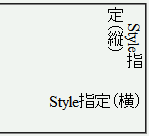

縦書きプロパティ（IE独自拡張）を指定した要素内では、欧文フォントファミリの指定が無視される。
<p style="writing-mode:tb-rl; font-family:'Times New Roman',serif;">Style指定（縦）</p> <p style="font-family:'Times New Roman',serif; text-align:right;">Style指定（横）</p>
Style指定（縦）
Style指定（横）
比較のため、同じフォント指定で横書きにしたものを置いています。
WinIE6.0での表示（標準モード）
WinIE6.0では、欧文フォントの指定が反映されています。
ＣＳＳで縦書き（ＩＥ独自拡張writing-mode: tb-rl;）にすると
font-family指定が無効になるって奴ですが、
どうも欧文familyだけですね。和文書体なら大丈夫です。
lang=enと指定した英単語の部分も縦書きだと和文とみなされるらしい。
縦書きはＩＥ5.5以上で可能ですが、ＩＥ6.0で直ってるかどうかは知りません。